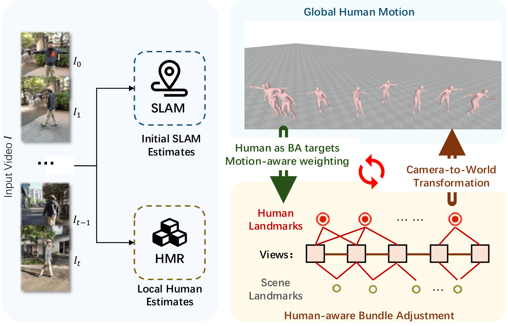
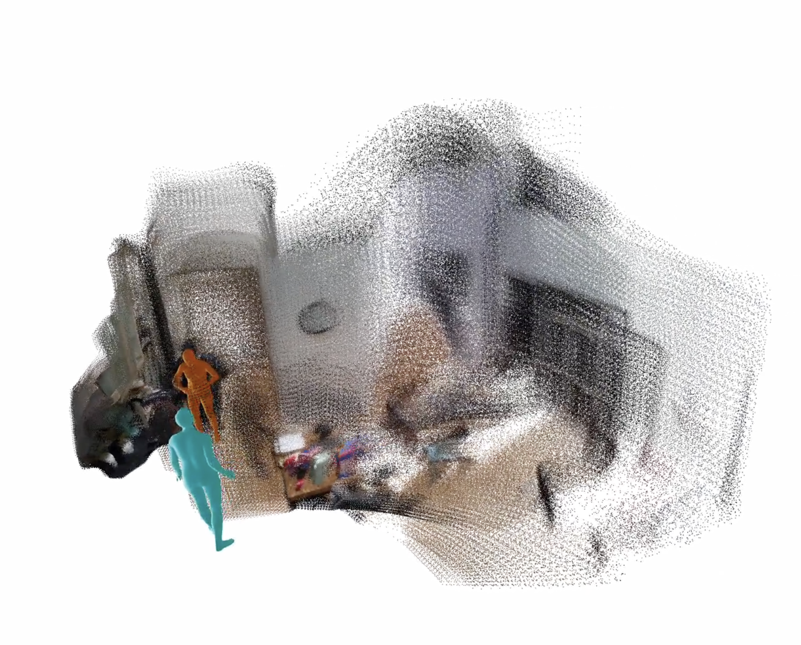

I'm a PhD student at the School of Computing, National University of Singapore advised by Professor Angela Yao. Previously, I was a Senior Data Scientist at Micron Technology for 3 years where I worked on cutting edge AI solutions in the semiconductor industry.
I have had the opportunity to work under the mentorship of Dr. Subhasis Chaudhury and Dr. Biplab Banerjee at the Indian Institute of Technology Bombay, focusing on 3D Vision and Lifelong Learning. My experience also includes working with Dr. C.V. Jawahar at the International Institute of Information Technology-Hyderabad, where I contributed to research in Egocentric Vision. Additionally, I served as a research assistant at the Indian Institute of Technology Delhi, collaborating with Dr. Brejesh Lall on projects related to Data-Efficient Learning and Biomedical Vision challenges.
Feb' 26: Our paper titled HumanBA: Human-Aware Bundle Adjustment via Global Human-Camera Decoupling is accepted at CVPR 2026. Preprint will be available soon!
Aug' 25: I have joined the School of Computing, National University of Singapore as a PhD student in Fall 2025.
Feb' 25: Our paper titled Hyperbolic Uncertainty-Aware Few-Shot Incremental Point Cloud Segmentation is accepted at CVPR 2025.
Scroll for more
Research
I'm interested in Computer Vision problems related to 3D scene reconstruction, human mesh recovery and scene understanding. You can find my research works below.

HumanBA: Human-Aware Bundle Adjustment via Global Human-Camera Decoupling
Fengyuan Yang, Tanuj Sur, Dr. Elden Tse, Dr. Angela Yao IEEE/CVF Conference on Computer Vision and Pattern Recognition, 2026
HumanBA improves global human and camera motion recovery in monocular human-centric videos by turning dynamic humans into useful bundle-adjustment constraints.
It decouples human-induced motion from joint trajectories to build pseudo-static human landmarks, then applies motion refinement and acceleration-aware reliability weighting to suppress unstable joints.
On EMDB2 and SLOPER4D, HumanBA reduces camera trajectory drift/jumps and improves world-coordinate human reconstruction.
3D point cloud segmentation faces challenges in incremental settings, especially with limited supervision and unseen classes. While Few-Shot Learning (FSL) and Class-Incremental Learning (CIL) have been studied separately, their combination (FSCIL) is underexplored in 3D segmentation.
To tackle this, we propose Hyperbolic Ideal Prototytpe Optimization (HIPO) framework which leverages hyperbolic Poincaré Ball classifier space and CLIP-informed Ideal Prototypes in the Poincaré sphere to capture data hierarchy, enforce prototype orthogonality, and maintain wide representational margins.
HIPO mitigates forgetting, enables smooth class integration, and achieves state-of-the-art results on S3DIS, ScanNetv2, and cross-dataset benchmarks for FSCIL.
Continual learning in deep neural networks faces challenges like catastrophic forgetting and issues with shifting data distributions.
This paper addresses these challenges within the Unsupervised Incremental Domain Adaptation (UIDA) framework, where the initial source domain is labeled while subsequent domains are not.
Existing methods often lack cross-domain generalization and adaptation.
We propose UIDAPLE, a new approach that uses a unified prompt across all domains, leveraging the CLIP foundation model to eliminate the need for separate domain treatments.
The text discusses advancements in deep learning for image semantic segmentation but highlights the challenge of requiring large annotated datasets. It notes a shift towards Few-Shot Learning (FSL), particularly in medical domains where pixel-level annotations are costly.
The proposed solution is Regularized Prototypical Neural Ordinary Differential Equation (R-PNODE), which utilizes Neural-ODEs alongside cluster and consistency losses to improve Few-Shot Segmentation (FSS) of organs.
Few-shot Learning (FSL) methods are increasingly used in data-scarce environments, particularly in the medical field where obtaining annotations is costly.
However, Deep Neural Networks, especially in FSL, are vulnerable to adversarial attacks, which can critically affect clinical decisions.
This paper presents a framework aimed at enhancing the adversarial robustness of few-shot segmentation models in the medical domain.
Mathematical expressions are essential not only for numerical calculations but also for enhancing clarity in discussions and documentation.
They are present in various software engineering artifacts like source code, documentation, and bug reports.
Research shows that these expressions impact the accuracy of commit message generation tools.
To support future research, a dataset of bug reports with annotated mathematical expressions has been created and shared, along with a tool called MEDSEA to identify these expressions.
Projects
I have highlighted some of the projects that I have been a part of and find interesting.

EgoHuman3R: Bridging First-Person and Third-Person Human-Scene Reconstruction
We are the first to jointly reconstruct first-person, third-Person Human Mesh Reconstruction along with scene point cloud for Aria Digital Twin Dataset. We leverage
EgoAllo and Human3R to accomplish both scene and human mesh reconstruction.
Code
We are the first to extend scene-level appearance transfer ReStyle3D toward dynamic videos with human occlusion — motivating Temporally Consistent Occlusion-Aware Scene Style Transfer.
Code